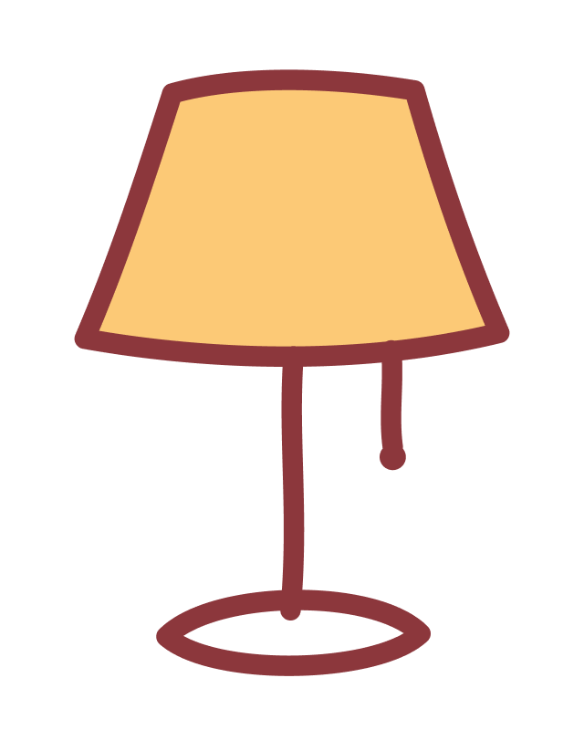

Studio Lixivel · Les guides du studio
Des conseils simples pour créer un intérieur fonctionnel, harmonieux et agréable à vivre.
Agencement · Décoration · Petits espaces
Avant de commencer
Lorsqu’on aménage son logement, on a souvent envie de choisir immédiatement un canapé, une couleur ou une jolie suspension. Pourtant, les décisions prises trop vite peuvent compliquer le quotidien, faire perdre de la place ou entraîner des achats inutiles.
Dans ce guide, nous partageons sept erreurs fréquentes et nos conseils pour les éviter. Que vous emménagiez, réaménagiez une pièce ou prépariez une rénovation, l’idée est de partir de vos besoins avant de penser aux finitions.
01
Comment vais-je utiliser cette pièce ?
02
Que dois-je absolument y ranger ?
03
Qu’ai-je envie d’y ressentir ?
Notre approche. Chez Studio Lixivel, nous cherchons le bon équilibre entre esthétisme, confort, fonctionnalité et budget. Un aménagement réussi n’a pas forcément besoin de gros travaux : il doit surtout être pensé pour votre manière de vivre.
Les erreurs · 01 à 03
01
Un meuble peut être très beau en magasin et finalement gêner l’ouverture d’une porte, réduire la circulation ou déséquilibrer toute une pièce.
Commencez par dessiner votre pièce à l’échelle, avec les dimensions des ouvertures et du mobilier que vous souhaitez conserver. Vérifiez ensuite l’implantation avant de commander.
Le conseil du studio. Repérez d’abord la place du canapé, de la table et des principaux rangements. Les petits éléments viendront ensuite.
02
Un intérieur trop rempli paraît vite étroit, même lorsqu’il possède une belle superficie. Les déplacements deviennent moins naturels et l’usage de chaque espace peut être compliqué.
Identifiez les trajets du quotidien : entrée, cuisine, salle à manger, chambres. Laissez des passages confortables et vérifiez l’ouverture des portes, tiroirs et placards.
Le conseil du studio. Marquez provisoirement au sol l’emplacement des futurs meubles avec du ruban de masquage : c’est un excellent test avant l’achat.
03
Sans rangement prévu dès le départ, les objets s’accumulent sur les surfaces. Résultat : une pièce peut sembler encombrée même avec une décoration soignée.
Faites la liste des affaires à ranger et pensez aux espaces sous-exploités : hauteur des murs, dessous de lit, entrée, angles ou meubles sur mesure lorsque cela est pertinent.
Le conseil du studio. Prévoyez des rangements faciles d’accès pour ce que vous utilisez souvent, et plus discrets pour le reste.
Les erreurs · 04 à 06
04
Un canapé trop imposant, une table trop petite ou un meuble trop haut peuvent déséquilibrer une pièce et gêner sa fonction.
Regardez les dimensions réelles, pas seulement les photos. Tenez compte de la largeur, de la profondeur, de la hauteur et du recul nécessaire autour de chaque meuble.
Le conseil du studio. Avant de choisir un meuble, vérifiez toujours son encombrement dans le plan et la manière dont vous allez l’utiliser.
05
Un seul plafonnier ne suffit pas toujours à créer une ambiance agréable ou à éclairer correctement toutes les activités.
Combinez, selon les besoins, lumière générale, éclairage fonctionnel et touches d’ambiance. Pensez aux points lumineux et aux prises avant d’engager d’éventuels travaux.
Le conseil du studio. Une liseuse près du canapé ou un éclairage dédié au plan de travail peuvent changer le confort d’une pièce.
06
Associer de nombreuses tendances peut donner un ensemble décousu, surtout dans les petits espaces.
Définissez une palette cohérente à partir de quelques teintes et matières qui vous plaisent. Répétez-les subtilement d’une zone à l’autre, sans chercher à tout uniformiser.
Le conseil du studio. Préparez un petit moodboard avec vos couleurs, revêtements, tissus et meubles avant de prendre vos décisions.
Les erreurs · 07
07
Les achats au coup de cœur et les décisions prises au fil de l’eau peuvent entraîner des dépenses inutiles ou un résultat qui ne correspond pas aux besoins de départ.
Déterminez ce qui est indispensable, ce qui peut attendre et le budget que vous souhaitez consacrer au projet. Si des travaux sont prévus, la conception permet d’abord de clarifier les aménagements et les matériaux avant de demander des devis précis aux artisans.
Le conseil du studio. Gardez une marge pour les imprévus lorsque des travaux sont envisagés, et ajustez les choix avant de passer commande.
À retenir
On gagne souvent plus à mieux organiser une pièce qu’à la remplir davantage.
Un projet cohérent commence par vos habitudes de vie, se construit autour d’un plan et se précise avec les choix de matériaux, de mobilier et de décoration.
À conserver
Gardez cette page à portée de main : elle vous aidera à avancer pièce par pièce.
Studio Lixivel vous accompagne pour repenser votre agencement et imaginer un intérieur adapté à votre mode de vie. Nos prestations vont de la conception à distance jusqu’à l’accompagnement pendant les travaux, selon la formule choisie.
studiolixivel.com/contact
Nos projets et nos conseils : @studiolixivel sur Instagram et TikTok.